Learn about important vitamins, their food sources, benefits and things to avoid.
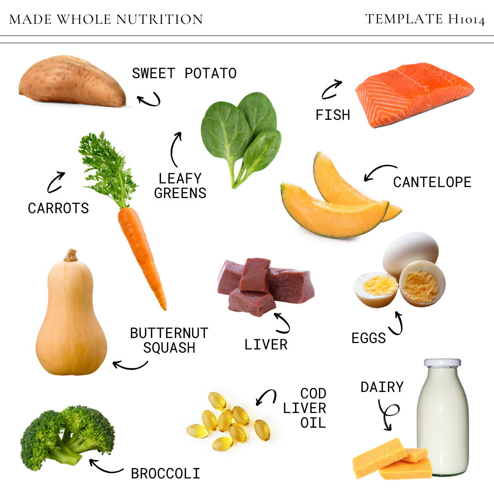
Uses: Supports eyesight, skin and immunity.
Food Sources: Vegetables, leafy vegetables and milk.
Avoid: High-dose supplements without medical advice.
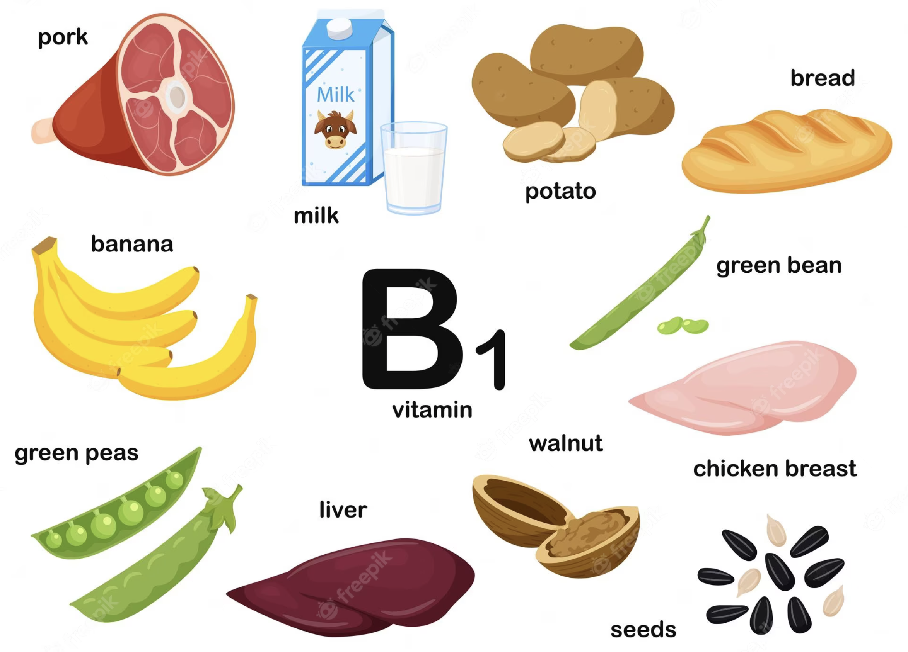
Uses: Helps energy production and nerve function.
Food Sources: Rice, dal, nuts and whole grains.
Avoid: Unnecessary high-dose supplements.
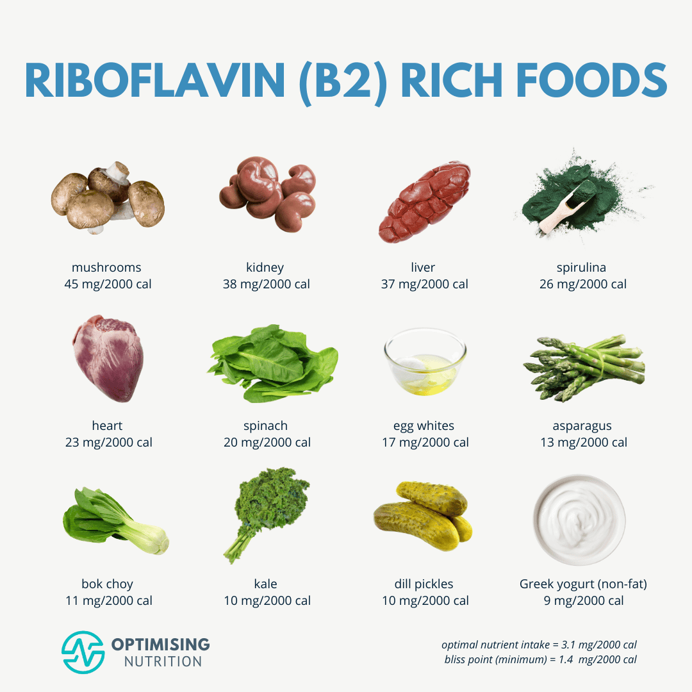
Uses: Supports energy production and healthy skin.
Food Sources: Milk, curd, eggs and vegetables.
Avoid: Taking supplements without a need.
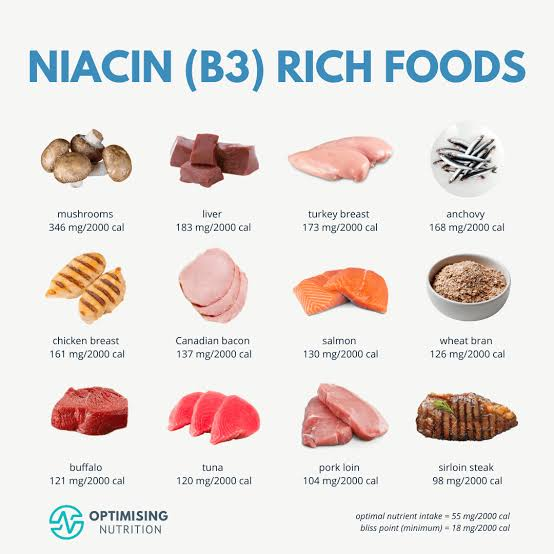
Uses: Supports energy metabolism and normal skin.
Food Sources: Chicken, fish, nuts and grains.
Avoid: High-dose supplements without advice.
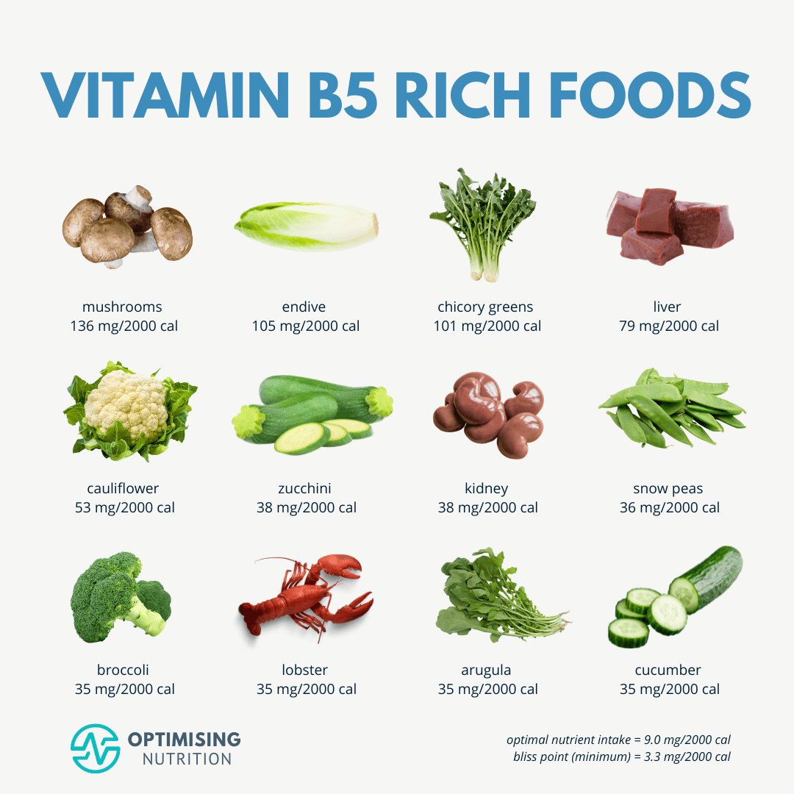
Uses: Helps use carbohydrates, fats and proteins.
Food Sources: Vegetables, nuts, milk and eggs.
Avoid: Unnecessary high-dose supplements.
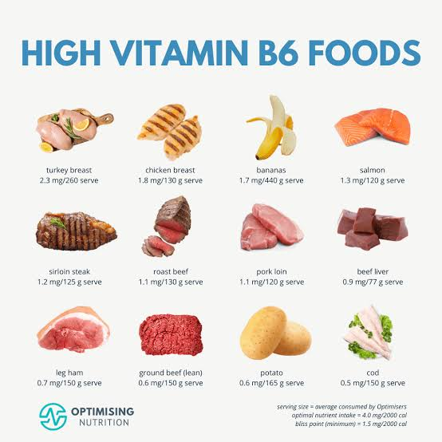
Uses: Supports metabolism and nerve function.
Food Sources: Banana, nuts, vegetables and chicken.
Avoid: Long-term high-dose supplements.
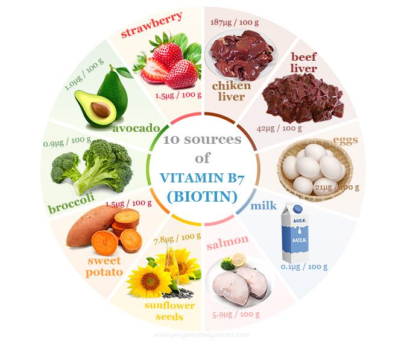
Uses: Supports metabolism, skin and hair.
Food Sources: Eggs, nuts, vegetables and legumes.
Avoid: High-dose biotin supplements.
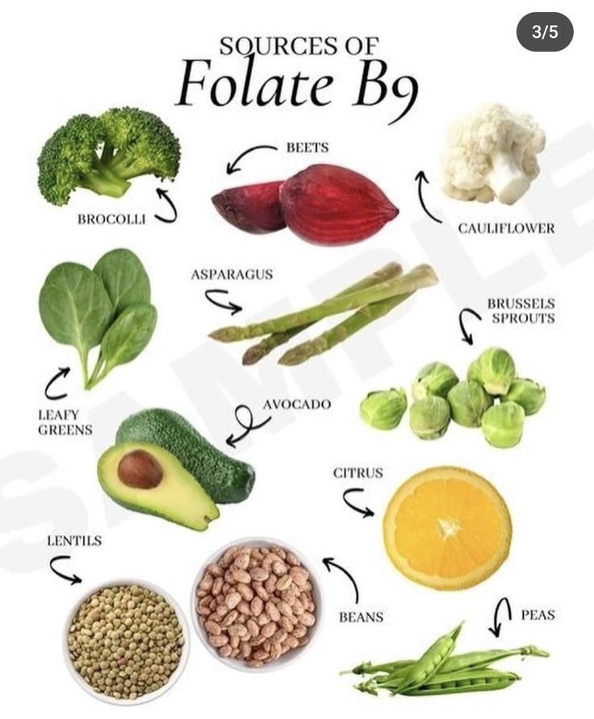
Uses: Important for cell growth and red blood cells.
Food Sources: Leafy vegetables and dal.
Avoid: High-dose supplements without advice.
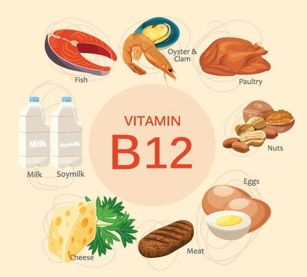
Uses: Supports nerves and red blood cell formation.
Food Sources: Milk, curd, eggs, fish and chicken.
Avoid: Injections or high-dose supplements without advice.
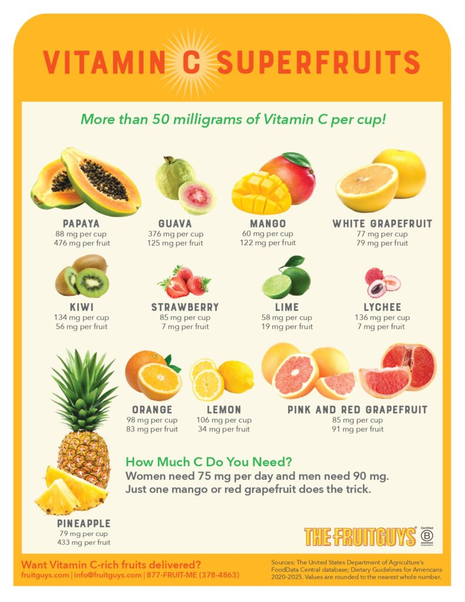
Uses: Supports immunity, skin health and iron absorption.
Food Sources: Fruits and vegetables.
Avoid: Very high-dose supplements.
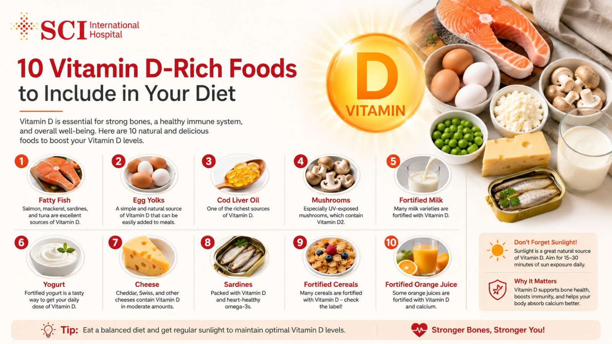
Uses: Supports bones, muscles and calcium absorption.
Food Sources: Milk, eggs and fortified foods.
Avoid: High-dose supplements without advice.
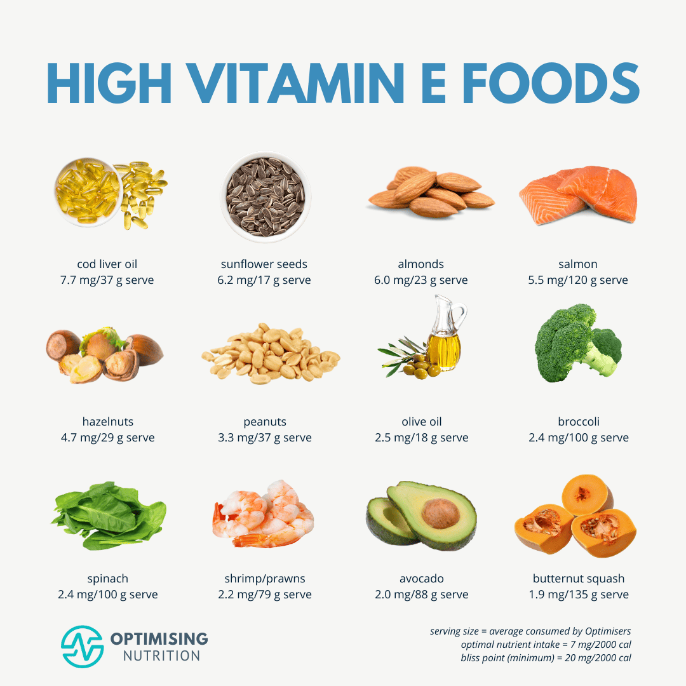
Uses: Supports cells and normal skin health.
Food Sources: Nuts, seeds and vegetables.
Avoid: High-dose supplements.
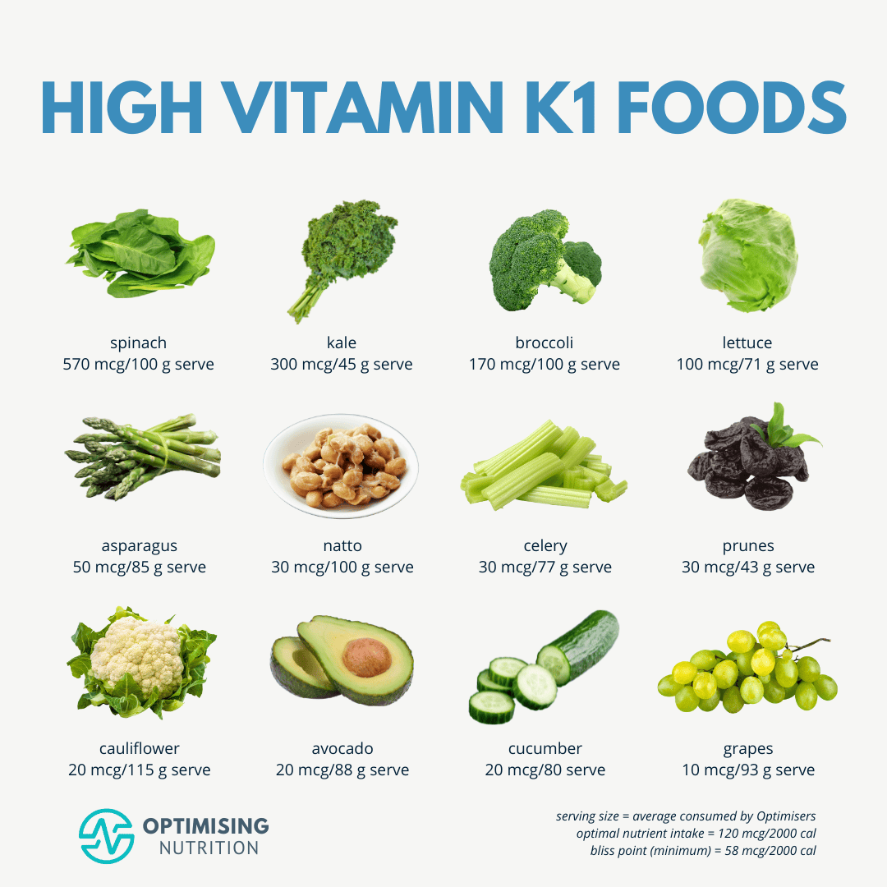
Uses: Supports blood clotting and bone health.
Food Sources: Leafy vegetables and vegetables.
Avoid: Sudden changes if taking blood-thinning medicine.